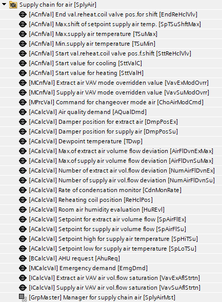
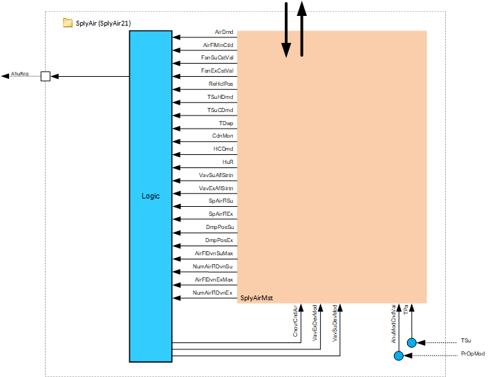
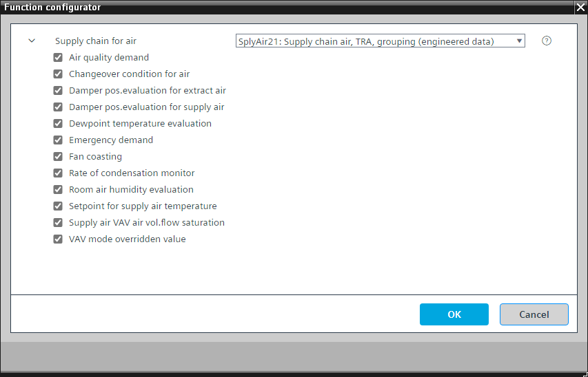

[SplyAir21] 供应链空气，与房间进行数据交换（TRA 集成），通过分组机制
Program block, name / node subtype: [SplyAir21] Supply chain air, data exchange with rooms (TRA integration), via grouping mechanism
Library hierarchy: Coordination
Family: SplyAir
项目树 | 图表 |
|---|---|
|
 |  |
Configurator


程序块存储在没有 I/Os. 的库中 使用auto-create and auto-connect函数创建 I/Os 和 /or 将它们连接到接口块，例如 R_A、CMD_B。或者，从包含库中预定义 I/Os 的文件夹中取出 I/Os，并从工厂中取出 /or，并将它们连接到接口块。
SplyAir21 通过群组机制收集和分析房间自动化区域中用户的空气需求数据，并将收集到的值提供给空气处理机组。它还从空气处理装置收集数据并将其分发给房间自动化区域的消费者。
程序块中最重要的功能是：
- AHU demand (consumer plant mode collection and conversion to AHU plant modes)
- Air quality demand
- Supply air temperature distribution
- Supply air fan coasting
- Extract air fan coasting
- AHU mode
- H/C changeover
- Supply air temperature setpoint
- Central VAV override
- Dew point evaluation and condensation monitoring
- Humidity evaluation
- Supply air VAV air volume flow saturation evaluation
- Extract air VAV air volume flow saturation evaluation
- Setpoint for supply air volume flow
- Setpoint for extract air volume flow
- Supply air damper position evaluation
- Extract air damper position evaluation
- Supply air volume flow deviation evaluation
- Extract air volume flow deviation evaluation
NOTICE

需要正确的安全设备
避免财产损失和不安全的情况。 AHU 安装人员必须根据需要容纳独立的泄压阻尼器和泄压逻辑，以避免损坏管道系统和设备。例如，请参阅 Desigo 房间自动化的 SplyAir11 中的供应链救援功能 (SplyRlfFnct11)。
- Emergency functions must be activated via compliant communication.
- Suitable safety equipment must be installed, e.g., fire dampers.
- The safety emergency functions do not replace safe equipment.
姓名 | 描述 | 类型 | 报警/通知类 | 趋势/类型 | |
|---|---|---|---|---|---|
SplyAirMst | Manager for supply chain air | GrpMaster：组经理 | N/A | N/A | |
AhuReq | Air handling unit request | BCalcVal: Binary calculated value | N/A | No | |
描述 |
|---|
|
Emergency demand 属于该选项的元素： Emergency demand | MCalcVal: Multistate calculated value |
Air quality demand 属于该选项的元素： Air quality demand | ACalcVal: Analog calculated value |
Fan coasting |
Setpoint for supply air temperature 属于该选项的元素： Reheating coil position | ACalcVal: Analog calculated value Setpoint high for supply air temperature | ACalcVal: Analog calculated value Setpoint low for supply air temperature | ACalcVal: Analog calculated value Maximum shift of setpoint supply air temperature | ACnfVal: Analog configuration value Start value reheating coil valve position for shift | ACnfVal: Analog configuration value End value reheating coil valve position for shift | ACnfVal: Analog configuration value Start value for heating | ACnfVal: Analog configuration value Start value for cooling | ACnfVal: Analog configuration value Min. supply air temperature | ACnfVal: Analog configuration value Max. supply air temperature | ACnfVal: Analog configuration value |
VAV 模式覆盖 属于该选项的元素： Supply air VAV mode overridden value | MCnfVal: Multistate configuration value Extract air VAV mode overridden value | MCnfVal: Multistate configuration value |
露点温度评估 属于该选项的元素： Dewpoint temperature | ACalcVal: Analog calculated value |
Rate of condensation monitor 属于该选项的元素： Rate of condensation monitor | ACalcVal: Analog calculated value |
Changeover condition for air 属于该选项的元素： Command for changeover mode air | MPrcVal: Multistate process value |
Room air humidity evaluation 属于该选项的元素： Room air humidity evaluation | ACalcVal: Analog calculated value |
Supply air VAV air volume flow saturation 属于该选项的元素： Supply air VAV air volume flow saturation | ICalcVal: Integer calculated value |
Extract air VAV air volume flow saturation 属于该选项的元素： Extract air VAV air volume flow saturation | ICalcVal: Integer calculated value |
Setpoint for supply air volume flow 属于该选项的元素： Setpoint for supply air volume flow | ACalcVal: Analog calculated value |
Setpoint for extract air volume flow 属于该选项的元素： Setpoint for extract air volume flow | ACalcVal: Analog calculated value |
Damper position evaluation for supply air 属于该选项的元素： Damper position for supply air | ACalcVal: Analog calculated value |
Damper position evaluation for extract air 属于该选项的元素： Damper position for extract air | ACalcVal: Analog calculated value |
Supply air volume flow deviation evaluation 属于该选项的元素： Maximum of supply air volume flow deviation | ACalcVal: Analog calculated value Number of supply air volume flow deviation | ACalcVal: Analog calculated value |
Extract air volume flow deviation evaluation 属于该选项的元素： Maximum of extract air volume flow deviation | ACalcVal: Analog calculated value Number of extract air volume flow deviation | ACalcVal: Analog calculated value |
AHU demand
SplyAir21 收集并评估来自消费者的空气需求值，并计算空气处理器所需的操作模式。空气需求量最大者获胜。
保护、经济、预舒适、舒适和快速通风的空气需求计为舒适空气需求。
例子：
- Number of Protection AirDmds = 3
- Number of Comfort AirDmds = 2
- Number of night cooling AirDmds = 4
由于保护和舒适一起算作舒适，因此有 5 个舒适空气需求 (3 + 2 = 5)。舒适空气需求数量 = 5。夜间冷却空气需求数量 = 4。
结果：AhuDmd = 舒适。获胜的 AHU 需求被发送到 AHU。
默认 AHU 操作模式为“关闭”。 SplyAir21 设置激活主 AHU 所需空气需求的最小阈值数量。此最小空气需求数量的默认值为 4，滞后值为 2。两者都在图表中硬编码。
Plant mode conversion
它是强制功能“Ahu 需求”的一部分，并在“空气处理机组需求”图表中进行编程。下表显示了各区域的消费者工厂模式从 AHU 到工厂模式的转换。
消费厂模式面积枚举 | 消费工厂模式区 | Ahu21工厂模式 |
|---|---|---|
|
1 | Off | 离开 |
2 | Protection | On |
3 | Economy | On |
4 | Pre-Comfort | On |
5 | Comfort | On |
6 | Warm-up | 不支持 |
7 | Cool down | 不支持 |
9 | Condensation overflow protection | 离开 |
10 | Free cooling | On |
11 | Night cooling | 不支持 |
12 | Ventilation | On |
13 | Equipment temperature protection | 离开 |
程序块 AhuPltMod21 和 AhuPltMod22 具有选项“External On”，准备通过以下方式连接到强制对象 AhuReqAuto-connect.
AHU emergency demand
紧急需求信号可用于覆盖主 AHU 电站模式选择中的正常操作逻辑。紧急需求是火灾关闭和排烟功能等火灾模式。
Air quality demand
SplyAir21 接收来自房间自动化区域消费者的空气质量需求，并对 10 个最高值进行平均。
Supply air temperature distribution
SplyAir21 从空气处理器收集测量的送风温度，并通过分组数据交换将其分发给房间自动化用户。对消费者的影响超出了该协调员的范围。
功能块 [R_A] 准备通过自动连接连接到“送风温度”。
Supply air fan coasting
对象。的价值
功能块 R_B 准备通过自动连接连接到“风扇命令”。
Extract air fan coasting
排风机惯性滑行信号 [FanExCst] 是一个二进制信号，指示 AHU 排风机是否正在惯性滑行。 SplyAir21收集信号并通过分组数据交换将价值分配给消费者。
功能块 R_B 准备通过自动连接连接到风扇命令。
AHU mode
SplyAir21 将二进制信号从 AHU 传递到区域消费者，指示空气处理是否处于活动状态。 SplyAir21收集信号并通过分组数据交换将其分发到各个区域。
功能块 R_M 准备通过自动连接连接到设备的“当前操作模式”。
H/C changeover
SplyAir21 评估房间自动化区域消费者的供暖/cooling 需求，并确定中央空气处理系统的H/C 切换条件。评估的转换条件 (CovrCndAir) 通过 SplyAir 组数据交换分发给优先级为 15 的区域消费者。
ChovrCndAir 是空气切换条件的枚举模式命令，它影响送风温度设定点计算。如果设置为加热，则 AHU 供应温度的设定点会向上移动。如果设置为冷却，则设定点会向下移动。有关更多信息，请参阅送风温度设定点部分。
在加热期间，该区域的冷却控制器被禁用。在制冷期间，该区域的加热控制器被禁用。 ChovrCndAir 的附加枚举为 Neutral（加热和冷却控制器均启用）和 None（加热和冷却控制器均禁用）。
切换判断逻辑：
使用组数据交换，系统评估请求供暖的区域消费者的数量和请求制冷的区域消费者的数量。 SplyAir 分组标签“HCDmd”读取结果，数字最大者获胜。
示例：50个段需要冷却，30个段需要加热；评价=冷却。
结果由 SplyAir 分组标签“CovrCndAir”分发，以在区域消费者中相应地启用或禁用控制器。
可以通过具有更高优先级的 BACnet 覆盖 ChovrCndAir。上述自动切换确定逻辑以优先级 15 命令该对象。
Supply air temperature setpoint
SplyAir21 提供取决于空气转换条件 (CovrCndAir) 的供气设定点值。当中央AHU可以提供用于加热或冷却的热空气或冷空气时，设定点相应地移动如下：
ChovrCndAir = Heating
左侧供气设定点（较热）
ChovrCndAir = Cooling
右侧送风设定点（冷却器）
ChovrCndAir = Neither
房间内的 VAV 供暖和制冷控制均被封锁。送风设定点为： [SpHiTSu] = TSuMax
[SpLoTSu] = TSuMin
ChovrCndAir = Neutral
房间内的 VAV 供暖和制冷控制均已启用。送风设定点为： [SpHiTSu] = SttValC
[SpLoTSu] = SttValH
为了管理房间区域消费者的再加热效率，收集并评估再热器位置。当 ChovrCndAir = 加热或冷却时，加热线圈位置 > 5 % 的 10 个最高位置的平均值会改变送风温度。
将“传感器、设定点和控制”的替代项从 AhuTCtl21 更改为 AhuTCtl22。 AhuTCtl22 准备通过自动连接连接到“送风温度高设定点”和“送风温度低设定点”。
Central VAV override
SplyAir21 允许技术人员或平衡员覆盖 VAV 供气和抽气装置，以支持调试和平衡操作。提供了用于覆盖送风和排风 VAV 单元的多状态 BACnet 对象（VavSuModOvrr 和 VavExModOvrr）。
枚举：
- 1: Off
- 2: Control mode
- 3: Maximum air volume flow
- 4: Minimum air volume flow
- 5: Smoke control air volume flow setpoint
如果“启用”对象（EnVavSuModOvrr 和 EnVavExModOvrr）设置为 1：是，则覆盖命令通过组数据交换以优先级 8 分发到相应的区域消费者。默认覆盖命令为 2：控制模式。该命令应用于相应应用程序功能的设备模式对象，以便：
- If the output from the area controller for the consumer is for damper position, the override applies to damper position.
- If the output from the area controller is a volume flow setpoint, the volume flow setpoint is overridden.
Dew point evaluation and condensation monitoring
为了避免冷凝，SplyAir21 可用于收集和评估冷冻天花板区域消费者的露点温度和主动冷凝监测器。
露点评估：
露点温度的评估算法是 0 至 50 [°C] / 122 [°F] 范围内 2 个最高值的平均值。该值和相关的干扰信息在主空气处理单元处用于除湿。控制湿度的应用通常在空气处理器级别工作，并使用一个值来表示所有区域的条件。
凝露监测：
SplyAir21 将活动冷凝监视器的数量除以冷凝监视器的总数，并将结果转换为百分比值（这是“冷凝监视器的比率”）。
冷凝信息的预期用途是用于调节送风的水含量以防止该区域出现冷凝的程序。
Humidity evaluation
SplyAir21 从房间自动化区域收集测量的相对湿度值并设置代表值。该值是从 10 个最高值的平均值得出的。
该信息的预期用途是帮助主要 AHU 确定何时加湿或除湿。
Supply air VAV air volume flow saturation evaluation
SplyAir21 收集并评估区域消费者饱和信号并计算“饥饿”消费者的数量。
区域发送饱和信号的标准：
- Damper position exceeds a configured damper saturation level
- Air flow error exceeds a configured air flow error level
- Both conditions stay true for more than a configured delay interval
该信息的预期用途是用于通过管道静压重置来优化 AHU 风扇速度以节省能源的程序。
Extract air VAV air volume flow saturation evaluation
SplyAir21 收集并评估区域消费者饱和信号并计算饥饿消费者的数量。
区域发送饱和信号的标准：
- Damper position exceeds a configured damper saturation level
- Air flow error exceeds a configured air flow error level
- Both conditions stay true for more than a configured delay interval
该信息的预期用途是用于通过管道静压重置来优化 AHU 风扇速度以节省能源的程序。
Supply air volume flow deviation evaluation
SplyAir21 收集来自用户的送风体积流量偏差并对 10 个最高值进行平均。它还统计有偏差的消费者数量。
Extract air volume flow deviation evaluation
SplyAir21 收集来自用户的抽气体积流量偏差并对 10 个最高值进行平均。它还统计有偏差的消费者数量。
Setpoint for supply air volume flow
SplyAir21 对消耗者的送风体积流量设定值求和。
Setpoint for extract air volume flow
SplyAir21 对用户的抽气体积流量设定值求和。
Supply air damper position evaluation
SplyAir21 从用户处收集送风风门位置值并对 10 个最高值求平均值。
Extract air damper position evaluation
SplyAir21 从消费者处收集抽气风门位置值并对 10 个最高值求平均值。
两对功能块 R_A 和 WP_REAL 准备通过自动连接连接到对象“供气压力设定值”和“排气压力设定值”。